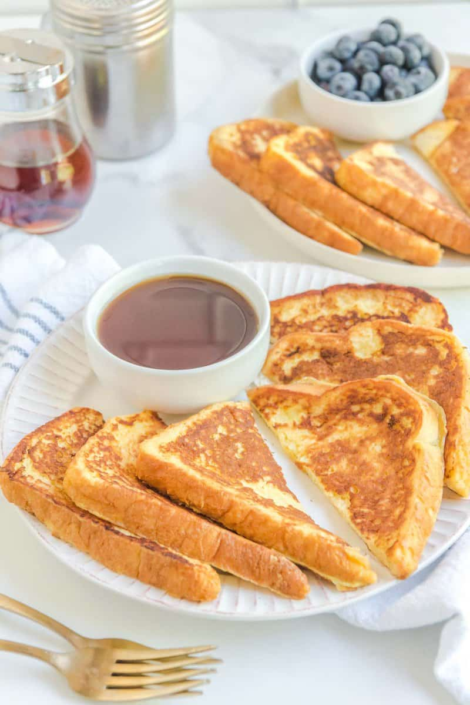

Fluffy French Toast

Description
This fluffy French toast recipe is crisp on the outside, but perfectly soft and tender on the inside.
Ingredients
- ¼ cup all-purpose flour
- 1 cup milk
- 3 eggs
- 1 TBSP white sugar
- 1 tsp vanilla estract
- ½ teaspoon ground cinnamon
- 1 pinch of salt
- 12 slices of bread
Steps
-
Gather all ingredients.
- Measure flour into a large mixing bowl. Slowly whisk in milk. Whisk in eggs, sugar, vanilla extract, cinnamon, and salt until smooth.
- Heat a lightly oiled griddle or frying pan over medium heat. Meanwhile, soak bread slices in milk mixture until saturated.
- Working in batches, cook bread on the preheated griddle or pan until golden brown on each side.
- Serve hot and enjoy.